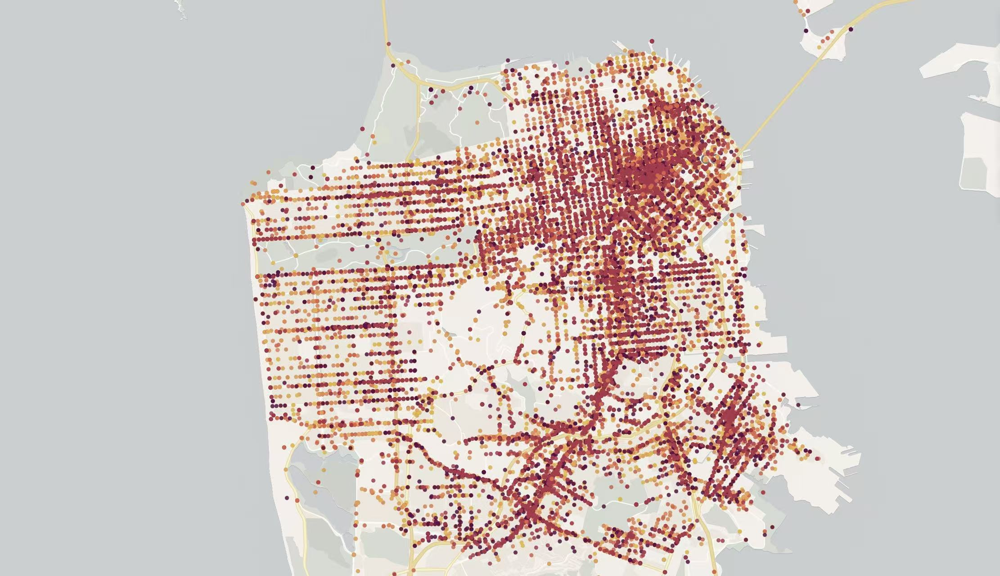

This project examines how traffic stops vary across San Francisco — connecting location, reason, and enforcement outcome to reveal patterns in policing intensity and decision-making across neighborhoods.


Which neighborhoods see concentrated stop activity? Heatmaps reveal policing intensity across San Francisco's districts.
Traffic violations, equipment checks, or suspicion-based stops? See how stop reasons distribute across neighborhoods.
Does the same violation result in a warning here but an arrest there? Outcome disparities across areas and demographics.